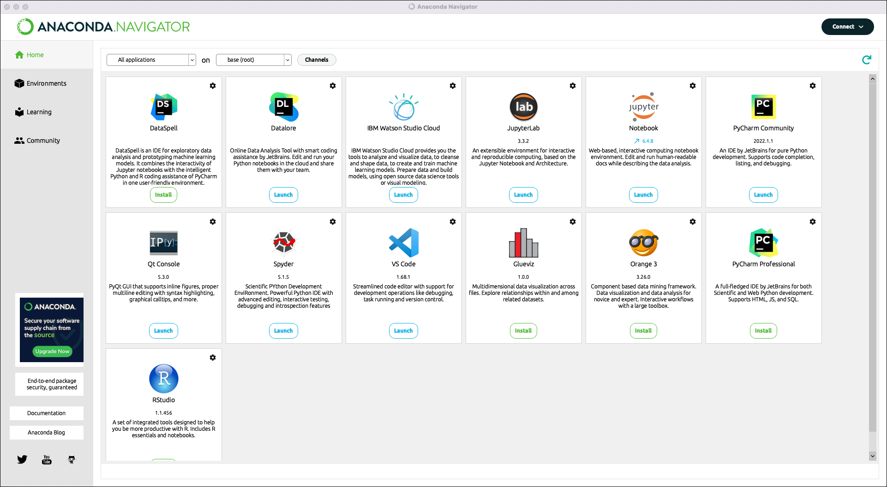
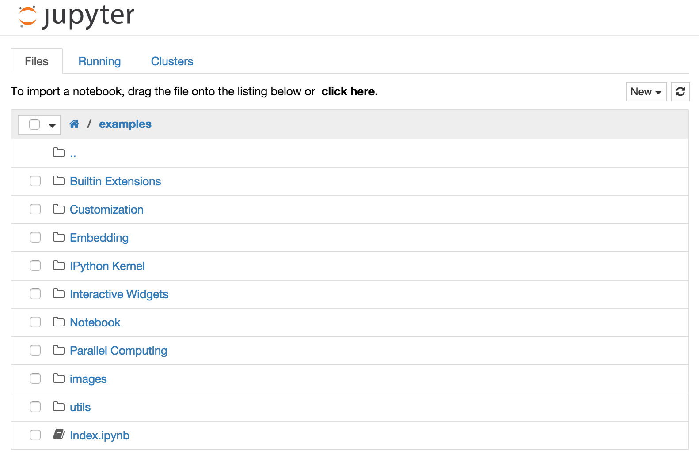

Installation guidelines#
To follow along with this tutorial and write (and run!) your own Python code, Python needs to be installed, as well as Jupyter Notebook and some other Python-based packages. After installing these applications, you should test that everything works as expected.
Install the Anaconda distribution of Python#
We strongly advise you to install the free Anaconda distribution of Python 3. Next to Python itself, the Anaconda distribution also contains Jupyter Notebook, an environment that can be used to document and to execute Python code. We will use Jupyter Notebook in this course.
The installation instructions link to separate instructions for Windows, Mac and Linux.
See Anaconda’s installation instructions for some important points to consider during installation. For example, the installation path must not contain spaces. If you want to use Anaconda Python from the command line, it helps to add Anaconda to your PATH during the installation, even though this is not recommended by the installer.
Test your installation#
If the installation process was successful, you should be able to open an application named ‘Anaconda Navigator’. The opening page of this application looks as follows:

Anaconda Navigator is a platform which can be used to to launch other applications, such as ‘Jupyter Notebook’ or ‘Spyder’.
To test whether everything works well, launch ‘Jupyter Notebook’ using Anaconda Navigator. Jupyter Notebook is an interactive environment in which you can work with so-called notebooks. The application should open in a web browser.
When you open Jupyter Notebook, you should initially see the application’s dashboard.

This dashboard displays a specific driectory on your own machine. The folders and files that are mentioned will probably be different from those shown in the screenshot above.
From the directory you see, you can hopefully navigate to the folder containing all the notebooks you downloaded for this tutorial. Try to open the notebook named ‘Jupyter_notebook_basics.ipynb’ to test whether everything works as expected.
Ask for help with installation#
If you experience difficulties during the installation of this software, do not hesitate to contact the CDS via email. If necessary, you can make an appointment and ask us to help you install the software.